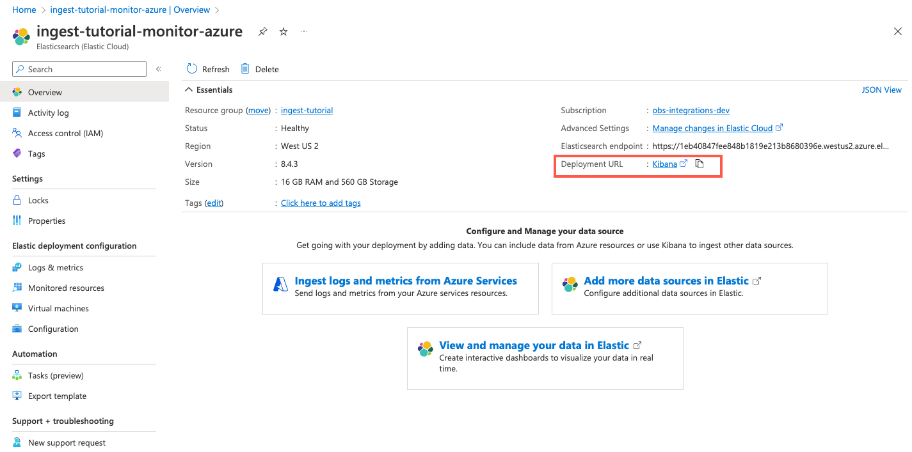
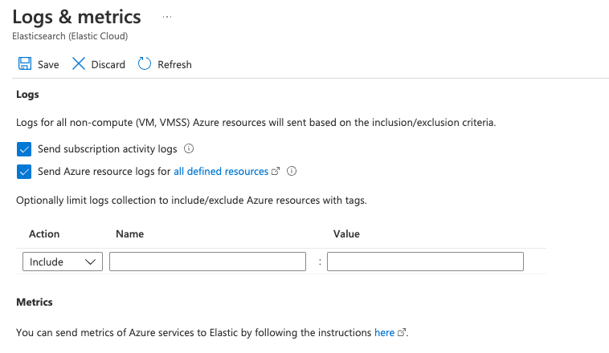

Monitor Microsoft Azure with the native Azure integrationedit
In this tutorial, you’ll learn how to:
- Create an Elasticsearch resource in the Azure portal.
- Ingest Azure platform logs using the native integration.
- Ingest logs and metrics from your virtual machines.
- Visualize the logs and metrics in Kibana.
Step 1: Create an Elasticsearch resource in the Azure portaledit
These steps will not work if you have an active GCP or AWS deployment in Elastic Cloud that is already associated with the email address used for your Azure account. To avoid this problem, delete your GCP and AWS deployments in Elastic Cloud, or use a different Azure account. If this does not resolve your issue, reach out to us at support@elastic.co.
Microsoft Azure allows you to find, deploy, and manage Elasticsearch from within the Azure portal. The Microsoft Azure portal integration makes it faster and easier for you to experience the value of Elastic in your Azure environment. Behind the scenes, this process provisions a marketplace subscription with Elastic Cloud.
Create an Elasticsearch resourceedit
-
Log in to the Azure portal.
Ensure your Azure account is configured with Owner access on the subscription you want to use to deploy Elasticsearch. To learn more about Azure subscriptions, refer to the Microsoft Azure documentation.
- In the search bar, enter Elasticsearch and then select Elasticsearch (Elastic Cloud).
- Click Create.
- Enter the Subscription, Resource group, and the Resource name.
-
Select a region and then click Review + create.
Don’t change any settings under Logs & metrics yet. We will cover logs and infrastructure metrics later in this tutorial.

- To create the Elasticsearch deployment, click Create.
-
After deployment is complete, click Go to resource. Here you can view and configure your deployment details. To access the cluster, click Kibana.
 - Click Accept (if necessary) to grant permissions to use your Azure account, then log in to Elastic Cloud using your Azure credentials as a single sign-on.
- To look for available data, click Observability. There should be no data yet. Next, you’ll ingest logs.
Step 2: Ingest logs by using the native integrationedit
To ingest Azure subscription and resource logs into Elastic, you use the Microsoft Azure native integration.
- In the Azure portal, go to your Elasticsearch resource page and click Ingest logs and metrics from Azure Services.
-
Under Logs, select both checkboxes to collect subscription activity logs and Azure resource logs. Click Save.
This configuration can also be applied during the Elastic resource creation. To make the concepts clearer, this tutorial separates the two steps.
Native metrics collection for Azure services is not fully supported yet. To learn how to collect metrics from Azure services, refer to Monitor Microsoft Azure with Elastic Agent.
-
In Kibana, under Observability, click Overview until data appears in Kibana. This might take several minutes.

-
To analyze your subscription and resource logs, click Show log stream (or click Stream in the navigation pane).

Step 3: Ingest logs and metrics from your virtual machines (VMs)edit
- In the Azure portal, go to your Elasticsearch resource and click Virtual machines.
-
Select the VMs that you want to collect logs and metrics from, click Install Extension, and then click OK.

- Wait until the extension is installed and sending data (if the list does not update, click Refresh ).
-
Back in Kibana, view the log stream again (Logs → Stream). Notice that you can filter the view to show logs for a specific instance, for example
cloud.instance.name : "ingest-tutorial-linux":
-
To view VM metrics, go to Infrastructure → Inventory and then select a VM.

To explore the data further, click Open as page.

Congratulations! You have completed the tutorial. To try other tutorials in this series, visit the Tutorials page.